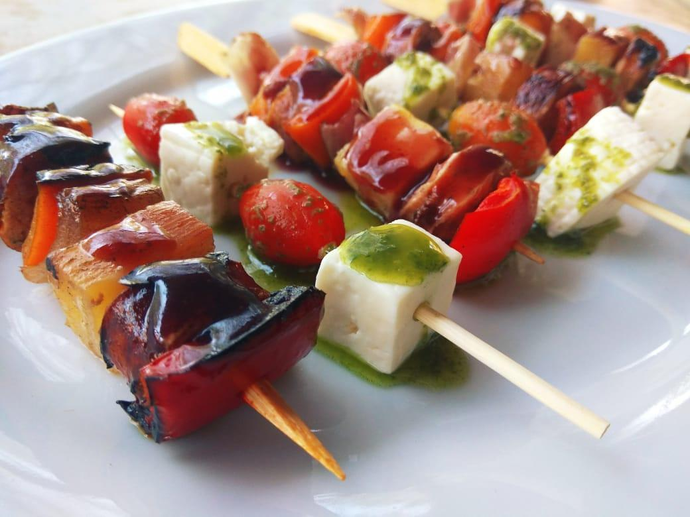
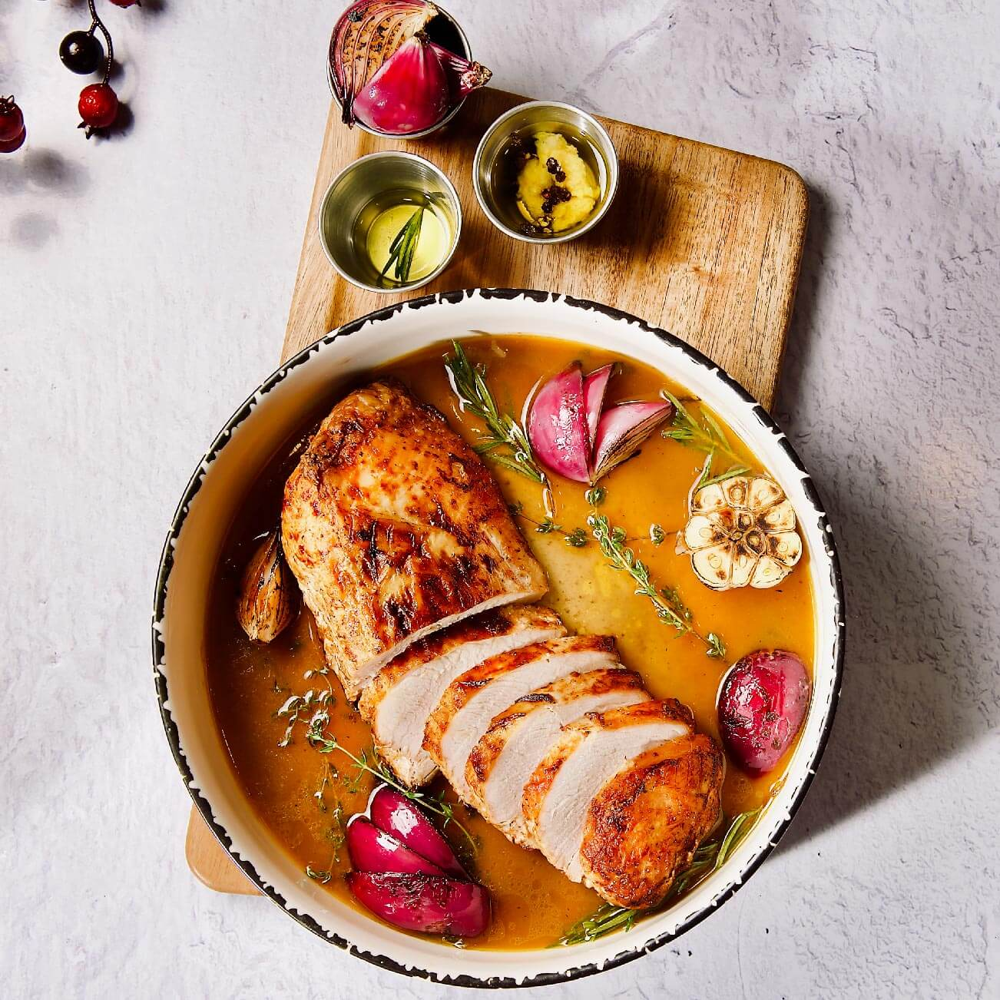
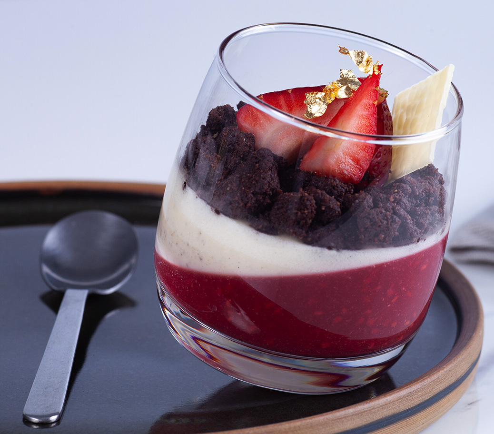

Descubrí recetas caseras paso a paso
Una cocina simple, sabrosa y posible. Desde platos clásicos hasta ideas nuevas para todos los días.

Entradas
Recetas fáciles para abrir el apetito: dips, tartas, ensaladas y más.

Platos Principales
Ideas de almuerzos y cenas: desde pastas hasta platos al horno, paso a paso.

Postres
Recetas dulces que cierran cualquier comida con broche de oro.